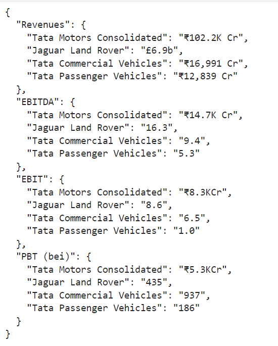

In this chapter, we will introduce you to the basics of using OpenAI models in Python.
We will start by installing the necessary Python libraries and creating an OpenAI API key. Then, we will show you how to perform some basic tasks with OpenAI models, such as:
Text summarization
Output in a given format
Translation
Code generation
We will also provide some tips for best practices when using OpenAI models.
Getting started
To get started with OpenAI models in Python, you will need to install the openai library.
!pip install openai
After you have installed, you will also need to create an OpenAI API key by signing up for opena an OpenAI account. You can use this link to sign up for OpenAI account. Once you sign up you will get a free credit of $5 which you need to consume in three months. You can create secret API key by going to API key page on OpenAI platform.
Once you have installed the necessary libraries and created an API key, you have to load the libraries and OpenAI key. You can either hardcode the API Key or you can use an environment variable to store this.
import openaiimport os# A sample value for illustration which will not work :)# openai.api_key = "<put your key here>" openai.api_key = os.getenv('OPENAI_API_KEY')
After you have Python configured and set up API key, the next step is to send request to OpenAI model using API. I have a created a helper function for simplicity.
def get_completion(prompt ): messages = [{"role": "user", "content": prompt}] response = openai.ChatCompletion.create( model="gpt-3.5-turbo", messages=messages, temperature=0.1, # this is the degree of randomness of the model's output )return response.choices[0].message["content"]
This function takes a prompt (text) as input and return the response from OpenAI as output. You can test this function using any simple prompt.
prompt ="When Indian constitution was adopted?"output = get_completion(prompt)print(output)
Output
The Indian constitution was adopted on November 26, 1949.
When you execute this, API calls goes to OpenAI with your query and OpenAI returns the output as text.
Example 1 Text summarization
Show text
text ="""Consuming a healthy diet throughout the life-course helps to prevent malnutrition in all its forms as well as a range of noncommunicable diseases (NCDs) and conditions. However, increased production of processed foods, rapid urbanization and changing lifestyles have led to a shift in dietary patterns. People are now consuming more foods high in energy, fats, free sugars and salt/sodium, and many people do not eat enough fruit, vegetables and other dietary fibre such as whole grains.The exact make-up of a diversified, balanced and healthy diet will vary depending on individual characteristics (e.g. age, gender, lifestyle and degree of physical activity), cultural context, locally available foods and dietary customs. However, the basic principles of what constitutes a healthy diet remain the same.For adultsA healthy diet includes the following:Fruit, vegetables, legumes (e.g. lentils and beans), nuts and whole grains (e.g. unprocessed maize, millet, oats, wheat and brown rice).At least 400 g (i.e. five portions) of fruit and vegetables per day (2), excluding potatoes, sweet potatoes, cassava and other starchy roots.Less than 10% of total energy intake from free sugars (2, 7), which is equivalent to 50 g (or about 12 level teaspoons) for a person of healthy body weight consuming about 2000 calories per day, but ideally is less than 5% of total energy intake for additional health benefits (7). Free sugars are all sugars added to foods or drinks by the manufacturer, cook or consumer, as well as sugars naturally present in honey, syrups, fruit juices and fruit juice concentrates.Less than 30% of total energy intake from fats (1, 2, 3). Unsaturated fats (found in fish, avocado and nuts, and in sunflower, soybean, canola and olive oils) are preferable to saturated fats (found in fatty meat, butter, palm and coconut oil, cream, cheese, ghee and lard) and trans-fats of all kinds, including both industrially-produced trans-fats (found in baked and fried foods, and pre-packaged snacks and foods, such as frozen pizza, pies, cookies, biscuits, wafers, and cooking oils and spreads) and ruminant trans-fats (found in meat and dairy foods from ruminant animals, such as cows, sheep, goats and camels). It is suggested that the intake of saturated fats be reduced to less than 10% of total energy intake and trans-fats to less than 1% of total energy intake (5). In particular, industrially-produced trans-fats are not part of a healthy diet and should be avoided (4, 6).Less than 5 g of salt (equivalent to about one teaspoon) per day (8). Salt should be iodized.For infants and young childrenIn the first 2 years of a child’s life, optimal nutrition fosters healthy growth and improves cognitive development. It also reduces the risk of becoming overweight or obese and developing NCDs later in life.Advice on a healthy diet for infants and children is similar to that for adults, but the following elements are also important:Infants should be breastfed exclusively during the first 6 months of life.Infants should be breastfed continuously until 2 years of age and beyond.From 6 months of age, breast milk should be complemented with a variety of adequate, safe and nutrient-dense foods. Salt and sugars should not be added to complementary foods.Practical advice on maintaining a healthy dietFruit and vegetablesEating at least 400 g, or five portions, of fruit and vegetables per day reduces the risk of NCDs (2) and helps to ensure an adequate daily intake of dietary fibre.Fruit and vegetable intake can be improved by:always including vegetables in meals;eating fresh fruit and raw vegetables as snacks;eating fresh fruit and vegetables that are in season; andeating a variety of fruit and vegetables.FatsReducing the amount of total fat intake to less than 30% of total energy intake helps to prevent unhealthy weight gain in the adult population (1, 2, 3). Also, the risk of developing NCDs is lowered by:reducing saturated fats to less than 10% of total energy intake;reducing trans-fats to less than 1% of total energy intake; andreplacing both saturated fats and trans-fats with unsaturated fats (2, 3) – in particular, with polyunsaturated fats.Fat intake, especially saturated fat and industrially-produced trans-fat intake, can be reduced by:steaming or boiling instead of frying when cooking;replacing butter, lard and ghee with oils rich in polyunsaturated fats, such as soybean, canola (rapeseed), corn, safflower and sunflower oils;eating reduced-fat dairy foods and lean meats, or trimming visible fat from meat; andlimiting the consumption of baked and fried foods, and pre-packaged snacks and foods (e.g. doughnuts, cakes, pies, cookies, biscuits and wafers) that contain industrially-produced trans-fats.Salt, sodium and potassiumMost people consume too much sodium through salt (corresponding to consuming an average of 9–12 g of salt per day) and not enough potassium (less than 3.5 g). High sodium intake and insufficient potassium intake contribute to high blood pressure, which in turn increases the risk of heart disease and stroke (8, 11).Reducing salt intake to the recommended level of less than 5 g per day could prevent 1.7 million deaths each year (12).People are often unaware of the amount of salt they consume. In many countries, most salt comes from processed foods (e.g. ready meals; processed meats such as bacon, ham and salami; cheese; and salty snacks) or from foods consumed frequently in large amounts (e.g. bread). Salt is also added to foods during cooking (e.g. bouillon, stock cubes, soy sauce and fish sauce) or at the point of consumption (e.g. table salt).Salt intake can be reduced by:limiting the amount of salt and high-sodium condiments (e.g. soy sauce, fish sauce and bouillon) when cooking and preparing foods;not having salt or high-sodium sauces on the table;limiting the consumption of salty snacks; andchoosing products with lower sodium content.Some food manufacturers are reformulating recipes to reduce the sodium content of their products, and people should be encouraged to check nutrition labels to see how much sodium is in a product before purchasing or consuming it.Potassium can mitigate the negative effects of elevated sodium consumption on blood pressure. Intake of potassium can be increased by consuming fresh fruit and vegetables.SugarsIn both adults and children, the intake of free sugars should be reduced to less than 10% of total energy intake (2, 7). A reduction to less than 5% of total energy intake would provide additional health benefits (7).Consuming free sugars increases the risk of dental caries (tooth decay). Excess calories from foods and drinks high in free sugars also contribute to unhealthy weight gain, which can lead to overweight and obesity. Recent evidence also shows that free sugars influence blood pressure and serum lipids, and suggests that a reduction in free sugars intake reduces risk factors for cardiovascular diseases (13).Sugars intake can be reduced by:limiting the consumption of foods and drinks containing high amounts of sugars, such as sugary snacks, candies and sugar-sweetened beverages (i.e. all types of beverages containing free sugars – these include carbonated or non‐carbonated soft drinks, fruit or vegetable juices and drinks, liquid and powder concentrates, flavoured water, energy and sports drinks, ready‐to‐drink tea, ready‐to‐drink coffee and flavoured milk drinks); andeating fresh fruit and raw vegetables as snacks instead of sugary snacks."""
Some text
prompt =f"""Summarize the text delimited by triple backticks \ into one paragraph.```{text}```"""response = get_completion(prompt)print(response)
Consuming a healthy diet is important for preventing malnutrition and noncommunicable diseases. However, dietary patterns have shifted due to increased production of processed foods and changing lifestyles. People are now consuming more high-energy, fatty, sugary, and salty foods, while not eating enough fruits, vegetables, and whole grains. The composition of a healthy diet varies based on individual characteristics, cultural context, and locally available foods. For adults, a healthy diet includes fruits, vegetables, legumes, nuts, and whole grains. It should also limit the intake of sugars and fats, particularly saturated and trans fats. Salt intake should be limited to less than 5g per day. For infants and young children, breastfeeding is recommended for the first 6 months and should be continued until 2 years of age. From 6 months, breast milk should be supplemented with nutrient-dense foods without added salt or sugars. Practical advice for maintaining a healthy diet includes eating a variety of fruits and vegetables, reducing fat intake, and limiting salt and sugar consumption.
Example 2 - Extracting info from text in JSON format
Here is another example where, we will see how to extract meaningful information from text in a json format.
The text is copied from from the press release of a motor company which is in the pdf format.
Show text
text_car_sales ="""Tata Motors Consolidated:TML continued its strong performance in Q1 FY24 with Revenues at ₹102.2K Cr (up 42% yoy), EBITDA at ₹14.7K Cr (up177% yoy) and EBIT of ₹8.3KCr (higher by ₹8.8KCr), all showing a sharp improvement driven by JLR and CV businesseswhilst the PV business was steady. JLR revenues improved by 57% to £6.9b on strong wholesales and improved mixresulting in EBIT margins of 8.6% (+1,300bps). CV volumes were lower by 15% over prior year due to transition to BS6Phase 2. However, the EBIT margins improved to 6.5% (+370bps) benefiting from the demand-pull strategy and richer mix.PV business was steady with 11.1% revenue growth and EBIT of 1.0% (+10bps). Overall PBT (bei) improved by ₹10.3KCr to₹5.3KCr and Net Profit was ₹3.3KCr.Looking Ahead:We remain optimistic on the demand situation despite near term uncertainties and expect a moderate inflationaryenvironment to continue in the near term. We aim to deliver a strong performance in the rest of the year too, thanks toa healthy order book coupled with low-break-even in JLR, a steady improvement in demand whilst we continue to driveour demand-pull strategy in CV, a set of exciting launches ahead of the festive season in PV and continued aggression inEVs.PB Balaji, Group Chief Financial Officer, Tata Motors said:“FY24 has begun on the right note with all automotive verticals delivering strong performances. The distinct strategyemployed by each business is now delivering consistent results and making them structurally stronger. We remainconfident of sustaining this momentum in the rest of the year and achieve our stated goals.”Q1 FY24Consolidated(₹ Cr Ind AS)Jaguar Land Rover(£m, IFRS)Tata CommercialVehicles (₹Cr, Ind AS)Tata PassengerVehicles (₹Cr, Ind AS)FY24 Vs. PY FY24 Vs. PY FY24 Vs. PY FY24 Vs. PYRevenue 102,236 42.1 % 6,903 57.0 % 16,991 4.4% 12,839 11.1 %EBITDA (%) 14.4 700 bps 16.3 960 bps 9.4 390 bps 5.3 (80) bpsEBIT (%) 8.1 880 bps 8.6 1,300 bps 6.5 370 bps 1.0 10 bpsPBT (bei) 5,330 ₹10,292crs 435 £959m 937 ₹635 crs 186 ₹172 crsTata Motors Group Results Q1 FY24 July 25, 2023Page 2 of 5Highlights• Revenues in Q1 FY24 of £6.9 billion, up 57% (y-o-y).• PBT (bei) in Q1 FY24 was £435 million, up £67 million from Q4 FY23 and up nearly £1 billion from Q1 FY23.• EBIT margin in the quarter was 8.6%, up from 6.5% in Q4 FY23.• The higher profitability year-on-year reflects favourable volume, mix, pricing and foreign exchange revaluationoffset partially by higher inflation and supplier claims.• FCF of £451 million, the highest JLR Q1 cash flow on record; cumulative FCF over the last three quarters is £1.8billion.• Cash on hand increased to £4 billion and net debt reduced to £2.5 billion at June 30, 2023.• Order book strong at 185k units with Range Rover, Range Rover Sport and Defender representing 76% of the orderbook.• Adrian Mardell and Richard Molyneux confirmed as Chief Executive Officer and Chief Financial Officer respectively.• Tata’s newly announced £4bn UK gigafactory will provide JLR with stable and secure supply of battery cells toelectrify JLR’s next generation modern luxury vehicles.Reimagine Transformation• Our first Reimagined modern luxury electric vehicle to go on sale will be Range Rover BEV, available for pre-orderlater this year and on sale in 2024.• Range Rover Sport named the 2023 Auto Express Large Premium SUV of the year 2023.• JLR’s Jaguar and Land Rover (Range Rover, Defender, Discovery) brands placed top of a J.D. Power US ‘AutomotivePerformance, Execution and Layout (APEAL)’ based on client perceptions of design, performance, safety, comfortand quality.• Model year refreshes of Discovery Sport and Range Rover Evoque with significant interior upgrades. OutboundEdition of Defender 130 launched.• Limited edition New Range Rover Sport SV EDITION ONE, with pricing ranging from £168,800 to more than£190,000 in the UK, was fully reserved ahead of its launch in May, following exclusive Range Rover House previewevents.• Digital transformation continues with Tata Technologies to support Enterprise Risk Management (ERM) across thebusiness and with Everstream to use AI to monitor our global supply chains."""
Now, the code to call this function, we’ll use
prompt =f"""Extract the numbers with their key from the below text delimited by triple backticks.Use JSON format to show your result.```{text_car_sales}```"""response = get_completion(prompt)

The OpenAI model has returned the output in a json string format. We can play with this string and create a json object . In the last we can create a data frame using the json object.
import jsonparse_response = json.loads(response)
import pandas as pdpd.DataFrame(parse_response).T
Tata Motors Consolidated
Jaguar Land Rover
Tata Commercial Vehicles
Tata Passenger Vehicles
Revenues
₹102.2K Cr
£6.9b
₹16,991 Cr
₹12,839 Cr
EBITDA
₹14.7K Cr
16.3
9.4
5.3
EBIT
₹8.3KCr
8.6
6.5
1.0
PBT (bei)
₹5.3KCr
435
937
186
Summary
In this chapter, we saw how to start working with OpenAI GPT models using API. In the next chapter we’ll see how to work with system prompt.